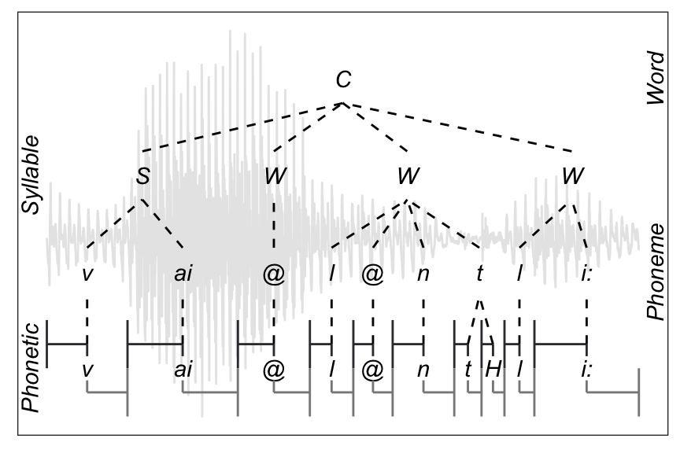
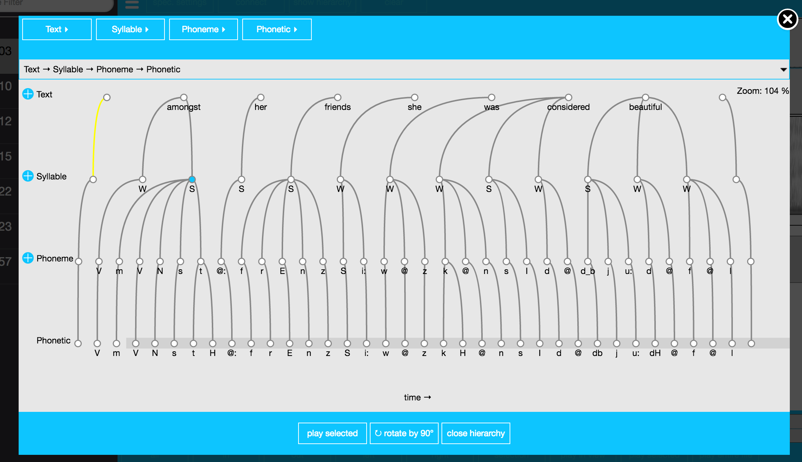
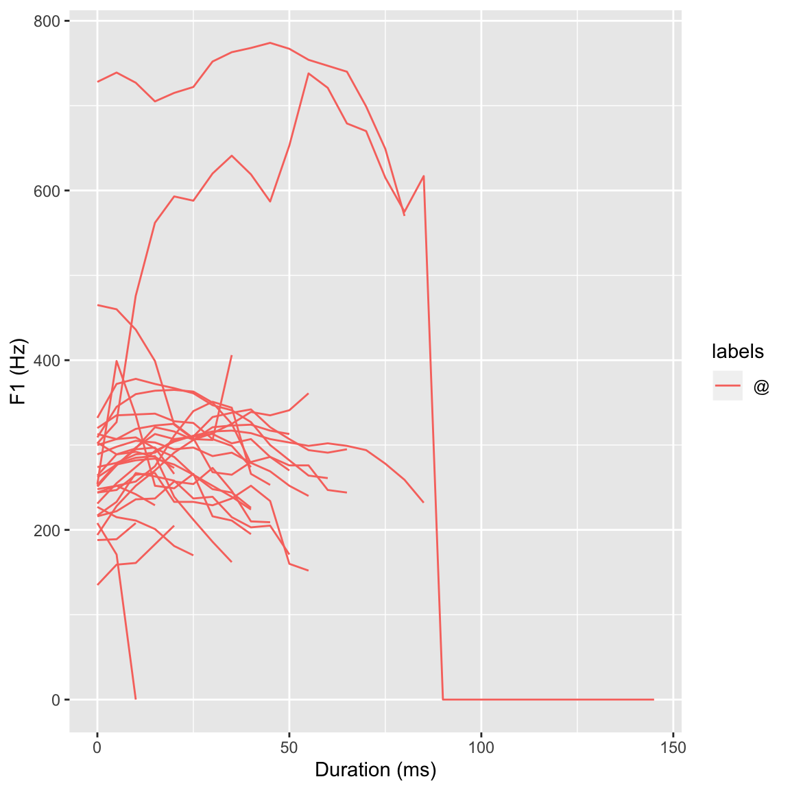
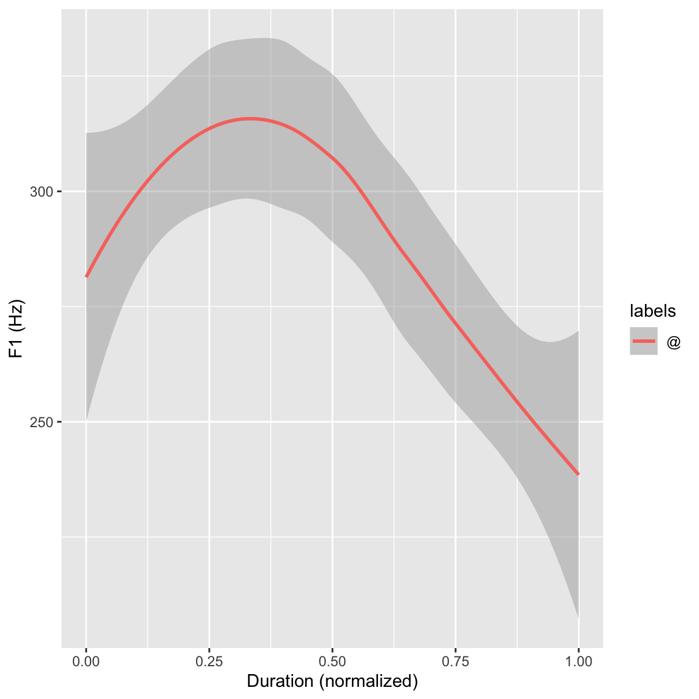
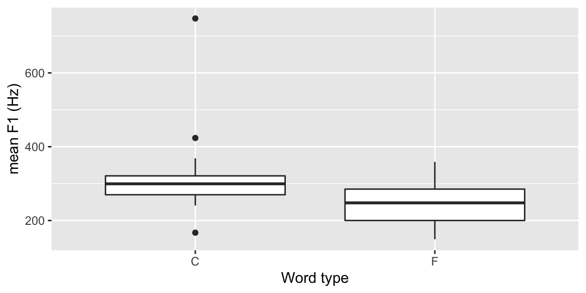

PJATK, jako jedna z niewielu Uczelni Wyższych w Polsce, zajmuje się analizą sygnału mowy. Celem naszych badań jest pomoc osobom zajmującym się naukami humanistycznymi oraz społecznymi w uzyskiwaniu jak największej ilości informacji z posiadanych nagrań dźwiękowych (nagrań mowy) oraz informacji tekstowych.
Wiele danych wykorzystywanych w naukach humanistycznych i społecznych jest przychowywanych w formie nagrań audio. Przykładami mogą być nagrania radiowe bądź telewizyjne, wywiady, przemowy (parlamentu, publiczne wystąpienia itp.), wykłady, filmy, literatura czytana i inne nagrania mowy. Głównym problemem jednak w przetwarzaniu danych akustycznych jest to iż wymagają znacznie więcej czasu niż tradycyjne dane tekstowe. Przytwarzanie tego typu danych wymaga przynajmniej podstawowego "know-how" w zakresie przechowywania tego typu danych ale również znacznego wysiłku aby wywnioskować z nagrań informacje nadające się do publikacji. Z tego powodu wydobywanie informacji z nagrań dźwiękowych bywa pomijane przez badaczy którzy albo nie posiadają wystarczającej ilości czasu lub nie chcą borykać się z w/w problemami. Dlatego też naszym głównym celem jest stworzenie darmowych oraz łatwo dostępnych narzędzi dla badaczy z dziedziń humanistycznych oraz społecznych.
W PJATK budujemy połączenia łączące dane humiastyczne z technologią. Opracowujemy narzędzia informatyczne które pomagają porzetwarzać i analizować nagrania mowy. Istotnym celem naszych działań jest ich udostępnianie wszystkim którzy chcą wyciągnąć z nich jak najwięcej informacji. Głównym celem wykorzystania naszych narzędzi są badania naukowe ale nie tylko. Istotny jest dla nas łatwy dostęp do rozwijanych przez nas narzędzi. Dlatego też skupiamy się na tworzeniu łatwo dostępnych oraz zrozumiałych dla każdego interfejsów. Wyrazem tego dążenia jest nowy serwis on-line którego celem będzie połączenie wcześnij wypracowanych narzędzi w łatwo dostępny interfejs.
Staramy się udostępniać nasze usługi za pośrednictwem stron internetowych. Obecnie można mieć do nich dostęp za pośrednictwem dwóch serwisów:
Nasz zespół składa się z 5 członków:
Jesteśmy autorem korpusu nagrań studyjnych który udostępniamy pod tym linkiem.. Korpus ten posłużył do wytrenowania systemu rozpoznawania mowy dla języka polskiego (bazującego na sytemie Kaldi)
Wiele narzędzi wspomnianych wcześniej wymaga dużego zbioru danych trenujących w postaci nagrań audio. Pozyskanie dobrej jakości nagrań mowy w danym języku jest kosztowne i często nieosiągalne przez większość badaczy. Do tej pory nie istniał darmowy, wysokiej jakości korpus nagrań mowy Polskiej z odpowiednio dużym słownikiem.
Korpus został nagrany w laboratorium dźwiękowym na terenie PJATK z wykorzystaniem mikrofonów studyjnych. Korpus nagrywało 317 mówców w 554 sesjach, gdzie każda sesja składała się z 20 czytanych zdań oraz 10 fonetycznie bogatych słów pojedyńczych. W sumie zostało nagranych 56 godzin mowy składającej się z 356676 słów ze słownika o wielkości 46361. Obecnie korpus jest dostępny do łatwego przeglądania on-line za pośrednictwem systemu EMU-SDMS (EMU Speech Database Management System). Środowisko EMU pozwala łatwe przeglądanie danych oraz wykonywanie obliczeń statystycznych dzięki integracji z środowiskiem R.
Korpus Polskich Kronik Filmowych uwzględnia nagrania w formie audio oraz wideo z lat 1945-1962. Korpus charakteryzuje się archaicznym językiem oraz relatywnie niską jakością nagrań co spowodowało iż był wymagającym problemem dla systemu rozpoznawania mowy. Korpus zawiera 10 minutowe fragmenty wiadomości, podobne do kronik filmowych wyświetlanych w kinie na całym świecie w tym samym okresie. Kronika została stworzona przez Wytwórnie Filmów Dokumentalnych i Fabularnych WFDiF w Warszawie. Obecnie prawa do nagrań należą do Filmoteki Narodowej FINA.
W komunistycznej Polsce kroniki filmowe były często używane jako narzędzie propagandowe. Zawierają komentarze, opinie dziennikarzy, obecne wydarzenia sportowe, ekonomiczne oraz kulturowe z kraju oraz ze świata. Przeważnie jedna kronika zawierała pięć części, każda opisująca inny temat ale wszystkie były czytane przez jednego mówcę. Jedynie okazjonalnie wtrącane były wywiady oraz przemowy innych ludzi. W niektórych przypadkach, takich jak międzynarodowy dzień pracy, cała kronika była podyktowana tylko tym wydarzeniom. Oprócz kin, kroniki były również prezentowane w 1960 roku przez Polską telewizję.
PKF są wyjątkowo użytecznym źródłem dla środowiska naukowego z powodu ich bogatej zawartości kulturalnej oraz historycznej. Dodatkowo dane mogą być annotowane wieloma meta-informacjami jak czas czy miejsce opisywanych wydarzeń co stanowi wyjątkowo wartościowe źródło do różnych badań społeczno językowych. Było to jednym z powodów dla których zdecydowano się włączyć kroniki do systemu ChronoPress. Główną zaletą tego systemu jest dodanie informacji czasowych do korpusu. Podczas gdy standardowy korpus może zawierać materiały z różnych źródeł oraz z różnych okresów czasowych, użycie takiego korpusu może prowadzić do niepoprawnych wniosków. Korpus uporządkowany chronologicznie mówi nam nie tylko jaki jest kontekst wypowiadanych słów ale także kiedy były one używane. Pozwala nam to nie tylko uniknąć wyżej wspomnianego problemu ale także dostarcza wyjątkowego narzędzia do badania rozwoju języka w czasie. [Obviously, this comes at the additional cost that such properly annotated data is much harder to come by than in case of the standard frameworks. While discussing the matter with the authors of ChronoPress, it was our intent to help with this particular issue, at least partially. The authors of this manuscript are not taking part in the development of the ChronoPress platform. Interested parties are kindly requested to send any inquiries with regards to the ChonoPress platform to its authors1]
Jednym głównym minusem całego projektu była niemożliwość włączenia materiału audio (ze względu na ograniczenia licencyjne). Jedynie transkrypcje mogą zostać opublikowane jako te uzyskane z ramach projektu CLARIN. Jest to duże ograniczenie ponieważ wierzymy że materiał audio mógłby dostarczyć wyjątkowo bogatego źródła do badań fonologii języka Polskiego w tym okresie historycznym.
Głównym celem było zatem dostarczenie kolekcji tranksrypcji możliwych do włączenia w system ChronoPress. Przy okazji korpus posłużył do stworzenia narzędzia automatycznej transkrypcji które może zostać wykorzystane do transkrypcji podobnych nagrań. Aby ułatwić zadanie, zdecydowano iż brane pod uwagę będą jedynie dane z okresu 1945-1962 (aby korelowały z innymi zasobami dostępnymi w ChronoPress) oraz jedynie głos narratora był trany pod uwagę. Jednym z głównych wyzwań w osiągnięciu tego celu był archaiczny język oraz niskiej jakości oraz niestabilny sygnał audio. Dodatkowo, prawie wszystkie filmy cechowała muzyka w tle która w momencie trwania mowy była wyciszana ale podgłaszana gdy było jej brak. Innym problemem było występowanie wielu języków oraz mówców w niektórych filmach. Pomimo tego korpus posiada wiele zalet. Wiele filmów było czytanych przez tą samą grupę dobrze znanych mówców. Dodatkowo domena jest stosunkowo wąska oraz dobrze zdefiniowana. Używając kolekcji przetranskrybowanych kronik, oszacowaliśmy wielkość słownika który wynosił mniej niż 50k wyrazów. W tym celu przetranskrybowane zostały tyko części zawierające komentatora (które stanowiły większość nagrań). Inne części audio (musyka, pozostali mówcy) zostali ignorowani.
Wynikowe transkrypcje zostały włączone do repozytorium projektu CLARIN-PL. Wytrenowany model zwraz z systemem do transkrypcji oraz segmentacji jest przechowywany w formie obrazu Docker, ze szczegółami dostępnymi w publicznym repozytorium.
Transkrypcja przemów Parlamentarnych to popularna domena w automatycznym rozpoznawaniu mowy. Rządy wielu krajów wymagają transkrypcji oficjalnych spotkań parlamentarzystów oraz ich opublicznienia. Większość tej pracy jest ciągle wykonaywana manualnie. Obecnie obrady Senatu są dostępne online w postaci audio, video oraz tekstowej. Patrząc na przykłady innych, akustycznie podobnych domen do nagrań Parlamentarnych, najbliższe byłyby nagrania ze spotkań gdzie częste przerywanie przez innych oraz mówienie przez kilka osób jest dość częstym zjawiskiem. Z drugiej strony, język oraz używane słowa są kompletnie różne. Bliższym w tym aspekcie byłyby nagrania wykładów. Lecz odbywałyby się w znacząco różnych warunkach akustycznych z prawie nie przerywą przemową jednego mówcy. Widać tutaj iż transkrypcja nagrań sejmowych jest unikatowym zadaniem. Podzbiór nagrań audio z Senatu, wraz z ich odpowiadającym transkrypcjom, został wybrany do wytrenowania modelu akustycznego oraz językowego. Wiele nagrań zostało opublikowanych na stronie Senatu, Parlamentu oraz na stronie kanału TVP Parlament.
Przygotowanie korpusu było czasochłonnym zadaniem, ponieważ oficjalne transkrypcje nie zawierały dokładnych transkrypcji nagrań audio. Były pisane w sposób bardziej odpowiadający poprawności gramatycznej bez zmiany semantyki wypowiedzi. Transkrypcje tego typu zostały przygotowane przez osoby zatrudnione specjalnie do tego celu, aby poprawić czytelność pliku PDF, lecz tego typu forma była mniej użyteczna do wytrenowania modelu akustycznego. Dlatego też dane musiałybyć prze-transkrybowane przez grupę zatrudnionych na kontrakcie osób. Usuwali oni również fragmenty audio zawierające duże fragmenty szumu tła, podwójną oraz niezrozumiałą mowę aby ułatwić proces transkrypcji. Duża część danych została również annotowana informacjami o mówcy (nazwa, płeć) aby ułatwić normalizację oraz adaptację modelu akustycznego. Większość danych zostało pozyskanych dzięki porozumieniu między Polskim Senatem oraz PJATK. Wiele nagrań jest często kiepskiej jakości, realizowanych przy użyciu biurkowych mikrofonów. Wprowadza to wiele zniekształceń, pogłosu oraz szumu tła. Dodatkowo do przetrzymywania nagrań używany jest stratny format plików. W sumie, zostało przygotowanych około 95 godzin nagrań zarówno z Sejmu jak i z Senatu, z 488 różnymi mówcami (w większości mężczyzn). Ze wszystkich zostało wybranych 10 mówców losowo jako zbiór testowy (około 2 godziny nagrań). Pozyskanie wystarczającej ilości danych tekstowych okazał się być nieco bardziej skomplikowany. Elektroniczne korpusy tekstowe są trudne do uzyskania dla języka Polskiego z powodu małej ilości prób cyfryzacji prac pisanych oraz restrektycjnych praw autorskich. Dodatkowo, nawet jeżeli istnieją tekstowe korpusy, posiadają ograniczony dostęp, zmuszając naukowców do odtwarzania ich własnych zbiorów każdym razem. Początkowo, wystarczająco duży korpus transkrypcji został pozyskany dzięki pomocy biura Senatu, obejmującego ponad 5 milionów słów. Korpus ten został później rozszerzony transkrypcjami z sesji Sejmowych oraz publicznie dostępnej części National Corpus of Polish (NKJP). Dane te wymagały segmentacji oraz normalizacji aby rozszerzyć wszystkie liczby oraz skróty do ich mówionych form w odniesieniu do zasad gramatyki. Tego typu normalizacja jest z reguły przeprowadzana manualnie jednak przy takim rozmiarze danych niezbędnym było stworzenie automatycznego narzędzia uzgadniającego formę danego wyrazu. Zostało to rozwiązane przy użyciu autorskiego oprogramowania wytrenowanego na ręcznie przypisanych zasadach gramatycznych przypisanych do rozszerzeń numerycznych. Testy pokazały 10% współczynnik pomyłek. Podsumowując, większość eksperymentów zostało przeprowadzonych na korpusie zawierającym około 145 milionów wyrazów. Korpus został zamieniony na małe litery a wszystkie liczby i skróty rozszerzone do ich pełnych, wypowiadanych gramatycznie form.
Celem było wsparcie już istniejącego systemu preznetującego podpisy filmowe na stronie Polskiego senatu. Strona ta wykorzystuje nagrania wideo oraz transkrypcje jako osobne dokumenty [Podać link i przykład z użyciem]. Nowo stworzony system może być użyteczny jako w pełni funkcjonalne narzędzie do automatycznego wyświetlania transkrypcji, do czasu gdy manualne transkrypcje nie staną się dostępna (zwykle 1-2 dni później). Ponadto może być użyty jako narzędzie segmentacji do przypisywania kodów czasowych do już istniejących manualnych transkrypcji. Największy problem z segmentacją jest taki że manualne transkrypcje nie dokładnie reprezentują co jest aktualnie wypowiadane w nagraniu. Manualne transkrypcje są poprawiane w celu ich łatwiejszego czytania w pliku PDF ale omijają wiele niuansów mowy jako powtórki wyrazów, wtrącenia itp. Dlatego też, została użyta alternatywna technika segmentacji. Po pierwsze audio jest rozpoznane używając modelu języka (wytrenowanego na słowniku który występuje w nagraniu audio) a w drugim kroku używane jest dopasowanie text-to-text aby określić które części audio zostały poprawnie dopasowane do tekstu. Następnie, ta sama metoda jest używana rekursywnie na wszystkich niepoprawnie dopasowanych fragmentacji dopóki nie osiągają perfekcyjnego dopasowania. Ta metoda zawsze kończy się "wymuszonym" dopasowanie, jednakże nie zawsze jest to nasz cel. Jeżeli transkrypcje które próbujemy dopasować zawierają błędy, możemy chcieć zdecydować aby przerwać "wymuszone" dopasowanie wcześniej i zaakceptować wyjście automatycznego rozpoznawania mowy. Istnieje wiele technicznych przeszkód w generowaniu podpisów. Rozwiązują to specjalistyczne oprogramowanie, stworzone specjalnie na potrzeby telewizyjne bądź kinowe. Programy te zawierają wiele heurystyk aby określić optymalne dopasowanie informacji na ekranie w celu łatwego ich śledzenia przez użytkownika. System podpisów w projekcie wykorzystującym korpus Sejmowy używa jedynie podstaowych technik (jak np. minimalny czas pomiędzy dwoma następującymi po sobie zmianami itp). Bardziej zaawansowane heurysyki byłyby trudne do zaimplementowania ponieważ wyjściem systemu rozpoznawania mowy jest ciąg wyrazów którym brakuje granic zdań oraz punktuacji. Problem ten jest jednak zaplanowany do rozwiązania w przyszłości. Finalny system posiada także możliwość eksportowania wyników do formatu WebVTT. Jest to standard w3C do opisywania podpisów używanych na stronach internetowych.
Narzędie to pozwala na konwersję każdego tekstu napisanego ortograficznie na jego formę fonetyczną (mówioną). Jest to jeden z podstawowych kroków w każdych procesie przetwarzania danych mowy. Narzędzie akceptuje każdą formę tekstu, jednakże nie wykonuje normalizacji tekstu. Oznacza to iż nie zamienia liczb, dat oraz skrótów w sposób automatyczny. System jest stworzony przy użyciu systemu opartego o reguły (972 podstawowe reguły oraz 4802 zastępowań wyrazów z powodu wyjątków). Dlatego też zawiera listę wyjątków dla nazw zwłasnych, zagranicznych i słów nietypowych. Narzędzie może generować zarówno listy wyrazów z różnymi wymowami jak również kanoniczną transkrypcję tekstu. Narzędzie wykorzystuje wariant alfabetu fonetycznego SAMPA, zmodyfikowanego tak aby zawierał tylko litery alfabetu (bez symboli jak apostrof czy tylda które zostały zastąpione lietrami i oraz n). Ważne aby wspomnieć o wielu możliwych wypowiedziach tego samego słowa, w zależności od zmienności mówcy oraz efekty koartykulacji wynikającego z kontektu. Np. [???]
Planuje się wdrożenie kilku rozszerzeń do tego narzędzia. Na pierwszym miejscu jest normalizacja tekstu (liczb, dat itp.) przed konwersją. Kolejnym rozszerzeniem jest dołączenie różnych form alfabetu fonetycznego oraz ewentualnie dodatnie dodatkowych poziomów annotacji (akcenty lub sylabizacja). Nie mniej jednak wdrożenie tych rozszerzeń zależy od zainteresowania środowiska wspomnianymi narzędziami.
Transkrypcja to zapis wymowy danego słowa. Alfabet ortograficzny nie jest w stanie pełnić tej funkcji, ponieważ zapis ortograficzny nie mówi (wbrew pozorom) jak dokładnie należy przeczytać dane słowo. Ponadto mnogość alfabetów (łaciński, cyrylica, koreański i inne) wymagałaby znajomości każdego z nich, by móc przeczytać słowo z danego języka. Trzeba jednak zauważyć, że chociaż istnieje międzynarodowy alfabet fonetyczny (międzynarodowy system API – Alphabet phonétique international), nie zawsze jest on powszechnie stosowany. Międzynarodowy system transkrypcji IPA (International Phonetic Alphabet) był tworzony w oparciu o fonetykę i fonologię języków zachodnioeuropejskich i nie jest zbyt dobrze dostosowany do języka polskiego.
Tzw. "Speech alignment" jest jednym z bardziej użytecznych narzędzi. Jest używany do dopasowania sekwencji słów do dostarczonego nagrania audio zawierającego mowę. Wynik narzędzia może być rozumiany jak automatyczne generowanie kodów czasowych gdy znane są zarówno audio jak i jego transkrypcja. Jest to o tyle użyteczne narzędzie ponieważ może być użyte do łatwego przeszukiwania konkretnych zdarzeń w dużych zbiorach nagrań. Umożliwia takżę obliczanie statystyk odnoszących się do czasu poszczególnych zdarzeń (oraz innych ich charakterystyk).
Dopasowanie jest wykonywane zarówno na poziomie słów oraz fonemów. Obecnie narzędzie generuje wyjście w formacie TextGrid (natywnym dla programu Praat) lecz planuje się wdrożenie innych formatów. Narzędzie generuje również link to przeglądarki EMU-webApp która umożliwia przeglądanie rezultatów segmentacji bezpośrednio w przeglądarce www.
W ramach rozszerzeń planuje się implementację lepszego modelu akustycznego. Adaptacja modelu akustycznego wraz z modelem języka byłaby również korzystna, szczególnie jeśli chodzi o zaszumione dane. Narzędzie działa poprawnie dla czystych i przewidywalnych danych. Może jednak produkować błędy bądź całkowicie zawieść dla sygnałów bardzo zaszumionych bądź o niskim poziomie energii. Rozszerzenie interfejsu byłoby również bardzo korzystne. Umożliwiałoby manualną poprawę dopasowania oraz poprawy niektórych informacji (np. transkrypcji ortograficznej bądź fonetycznej). Tego typu usprawnienia zmieniłyby obecny w pełni automatyczne narzędzie na semi-automatyczne.
Deatakcja mowy (Voice activity detection: VAD) jest często używane na etapie pre-processingu do wielu narzędzi przetwarzania mowy. Ponieważ dane audio są zwykle nie mongeniczne oraz zawierają zmiksowane fragmenty mowy, muzyki, tła oraz ciszę. Rozróżnienie pomiędzy tymi różnymi typami audio jest niezwykle istotne w skuteczności systemu do transkrypcji. Jego celem jest odizolowanie części zawierających mowę od części zawierających inny typ zdarzeń (cisza, szum, muzyka itp.). Narzędzie to jest kompletnie niezależne od języka oraz domeny wypowiedzi. Nie mnie jednak może generować błędy przy bardzo zaszumionych danych. Niewielki eksperyment potwierdził wysoki poziom czułości (Recall ~ 99%) oraz średnią precyzję (Precision ~ 58%). Było to jednak zamierzonym celem aby nie utracić żadnych części zawierających mowę, akecptując czasami fragmenty które jej nie zawierają. Jest to spowodowane tym iż pozostałe narzędzia akceptują niewielką ilość zaszumionych danych, ale działają błędnie gdy jakakolwiek część mowy jest pominięta.
Narzędzie to jest używane do segmentacji dużych plików audio na części wypowiadane przez poszczególne osoby. Istnieje kilka typów strategii segmentacji mówców. Pierwsza to rozpoznawanie momentu zmiany mówcy na innego, druga to dodanie informacji który fragment należy do tego samego mówcy oraz trzecia strategia polega na identyfikacji rozpoznanych fragmentów tak aby wiedzieć kto dokładnie mówi w rozpoznanym segmentcie. Nasze narzędzie wspiera jednak drugą strategię w której rozpoznajemy zmiany mówców, wiemy ilu ich jest oraz w jakich momentach nagrania występując. Narzędzie jednak traktuje mówców w sposób anonimowy. Narzędzie to jest użyteczne do adaptacji różnych narzędzi oraz modeli do indywidualnych mówców ale również do innych typów anali które wymagają segmentacji mówców.
Często dokładna transkrypcja materiału audio nie jest konieczna ponieważ jesteśmy zainteresowani tylko występowaniem pojedyńczych słów. Wykrywanie słów kluczowych jest procesem który pobiera plik audio oraz listę słów kluczowych. Następnie generuje listę występowania tych słów w obrębie pliku audio. Należy jednak zwrócić uwagę że model języka ma ograniczoną wielkość słownika, dlatego też niemożliwym jest przewidzieć wszystkich możliwych wyrazów. Z tego powodu, system używa kombinacji słów oraz wyrazów w taki sposób że gdy jest potrzeba znalezienia słowa spoza słownika, używana jest reprezentacja sylabowa danego słowa. Dzięki temu system radzi sobie ze słowami które są spoza słownika, ale jest bardziej podatny na błędy gdy dostarczone są bardzo krótkie słowa kluczowe. W celu przetestowania narzędzia został przygotowany test który pokazał całkowitą precyzję na poziomie ~95% oraz poziom czułości (Recall) dla znanych wyrazów ~82% oraz niski poziom dla wyrazów nieznanych (~20%). Model oparty o sylaby wymaga poprawy w przyszłości aby uniknąć błędów w przypadku wyrazów nieznanych.
Narzędzie to używa systemu rozpoznawania mowy do wygenerowania najbardziej prawdopodobnyej ortograficznej transliteracji nagrań dźwiękowych mowy Polskiej. Prawidłowo zaimplementowany system zawiera kilka komponentów:
Na początku sygnał audio jest poddawany ekstrakcji cech w postaci ramek czasowych. Użyty został standardowy zestaw 39 cech (głównie MFCC) z 100 ramkami na sekundę 25ms nakładaniem się. Następnie ramki są filtrowane używając modułu VAD oraz dostarczone do modelu akustycznego. Informacje zebrane z modelu akustycznego oraz z modelu języka są przetwarzane przez dekoder do generowania ciągu słów. Słowa te są określone przez słownik który jest mapowany do wyjścia fonetycznego modelu akustycznego używając modułu G2P. Konwersja G2P jest istotnym pomostem pomiędzy dźwiękiem mowy oraz jak jej używamy podczas czytania i pisania słów na papierze. Procedura ta jest ważna zarówno w fazie trenowania (do konwersji trenujących transkrypcji na deskrypcje rozpoznające dźwięki mowy) oraz podczas normalnego użycia (do konwersji rozpoznanych dźwięków na text do czytania).
to do
System zarządzania bazami mowy (EMU Speech Database Management System EMU-SDMS) jest zbiorem narzędzi których celem jest bycie jak najbliżej rozwiązaniom typu all-in-one do generowania, manimulacji, zapytań oraz analizy oraz zarządzania nagraniami audio zawierającymi mowę. System jest skoncentrowany wokół języka R umożliwiającego obliczanie statystyk. System zawiera 4 główne komponenty: wrassp, emuR, emuDB oraz EMU-webApp. Te 4 komponenty pomagają w przeprowadzaniu badań dotyczących mowy oraz języka naturalnego, poprzez dostarczenie zintegrowanego systemu dzięki któremu jesteśmy w stanie odpowiedzień na następujące pytanie badawcze: biorąc pod uwagę daną bazę danych, czy na wysokość samgłoski @ (mierzoną przez jej pierwszy formant) ma wpły to, czy pojawia się one w silnej czy słabej sylabie?
Trzeba zauważyć że pakiet emuR jest jedynym komponentem który komunikuje się ze wszystkimi innymi. Z tego też powodu jest najistotniejszy. Zajmuje się obsługą plików oraz bazy danych. Używa pakietu wrassp do przetwarzania sygnałów oraz dostarcza resultaty do EMU-webApp. Pomimo iż system składa się z 4 komponentów, urzytkownik używa przedewszystkim Emu-webApp oraz emuR.
Domyślny schemat przepływu pracy wygląda następująco:
Początkowo użytkownik tworzy referencję do emuDB poprzez funkcję load_emuDB(). Tak uzyskana referencja do bazy może zostać użyta albo do wyświeltania jej w EMU-webApp (serve()) lub do tworzenia zapytań (query()) do annotacji. Rezultaty zapytania mogą wtedy być użyte albo do wykonania jednego lub więcej tzw podzapytań (requeries) lub do wyekstrachowania wartości sygnału które odpowiadają wynikowi zapytania. Finalnie, dane sygnału mogą przejść dalsze przygotowania (np. usuwanie outliers) oraz sprawdzone wizualnie przez dalszą analizą oraz przetwarzaniem statystycznym. Wynikowy obiekt powyższych funkcji (matrix lub data.frame) może być użyty jako wejście do tysięcy innych funkcji języka R. EMU-SDMS znacząco redukuje liczbę narzędzi mowy i języka z którymi badacze muszą się zmagać oraz pomaga ułatwić odpowiedzi na pytania badawcze. Jedynym wymogiem w użyciu jest podstawowa znajomość platformy R.
Aby lepiej zobrazować zasadę działania systemu przeprowadzimy wszystkie procesy krok-po-kroku aby odpowiedzieć na pytanie badawcze: "mając dany zbiór danych, wysokość samogłoski @ jest zależna od tego czy występuje w wyrazie czy jako znak funkcyjny?" Gdy nagrania audio są dostępne należy przekształcić jes na format emuDB. Istnieje kilka metod (udostępnionych przez emuR) które umożliwią nam zaimportowanie kolekcji plików audio wraz z ich transkrypcją w formacie np. TextGrid. Służy do tego funkcja convert_ToxtGridCollection(). Oczywiście istnieją również inne funkcje ułatwiające ten proces. Ich opis jest dostępny w dokumentacji. Aby dowiedzieć się więcej na temat działania tej funkcji można wpisać help(convert_ToxtGridCollection). W EMU-SDMS, kolekcja plików taka jak kolekcja TextGrid odnosi się do zestawu par plików gdzie występują dwa typy plików o różnych rozszerzeniach ale o tej samej nazwie podstawowej. Jest to ważne aby system był w stanie sparować pliki razem ze sobą. Funkcja convert_ToxtGridCollection() przekonwertuje kolekcje TextGrid na format emuDB. Założeniem wstępnym jest to że pliki .TextGrid muszą zawierać te same poziomy annotacji. Jeżeli warunek nie jest spełniony, można wybrać tylko ten podzbiór poziomów annotacji który jest wspólny dla wszystkich plików. Można oczywiście wybrać które poziomy annotacji chcemy brać pod uwagę. Po stworzeniu przez funkcje bazy danych możemy załadować naszą bazę do sesji R używając funkcji load_emuDB(). Dalej za pomocą funkcji summary() możemy podejrzeć strukturę bazydanych. Po załadowaniu przychodzi czas na wiaualną inspekcję danych w EMU-webApp. Służy to tego funkcja server(). Integralnym krokiem w domyuślnym prezpływie pracy są zapytania do bazy danych. emuR implementuje metodę query() do tego celu. Funkcja ta wykonuje wyrażenia EMU Query Language (EQL) oraz wydobywa zaanotowane fragmenty z bazy danych które spełniają wymagania zapytania. Możemy wykonywać zapytania osobno dla każdego poziomu np aby zwrócił wszystkie fragmenty z poziomu "Syllabe" które są równe "S" (silna sylaba). W tym celu wykonalibyśmy polecenie: Rezultatem takiego zapytania jest obiekt emuRsegs, który jest superklasą data.frame. Obiekt ten często odnosi się do listy segmentów które są opisane za pomocą punktu startowego oraz końcowego segmentów, z jakiej sesji oraz paczki pochodzi dany wpis oraz poziom do którego należy. Tego typu zapytania pochodzą z pojedyńczego poziomu który pasuje do określonej etykiety. Jednakże EMU-SDMS oferuje mechanizm do wykonywania wewnątrz poziomowych zapytań takich jak: zwróć wszystkie pozycje z poziomu Phonetic które zawierają etykietę "n" oraz są częścią zawartości wyrazu. Aby to było możliwe, EMU-SDMS oferuje dość zaawansowane funkcje modelowania struktury adnotacji. Aby to było możliwe należy przekształcić płaską strukturę annotacji na hierarchiczną jak zaprezentowano na poniższym rysunku.  Warto zauważyć że tylko poziom "Phonetic" zawiera informacje o czasie, a pozycje na innych poziomach są połączone ze sobą w formę hierarchicznej struktury. Manualne tworzenie takich połączeń byłoby zbyt czasochłonnym zadaniem. Hierarchiczna informacja jest jednak pośrednio zawarta z czasowych przedziałach semgnetów na każdym poziomie. Należy więc użyć funkcji automatycznej (dostarczonej przez emuR) do zbudowania tej struktury w sposób automatyczny. Służy do tego funkcja autobuild_linkFromTimes(). Należy to jednak robić poziom po poziomie, zaczynając od najbardziej ogólnych połączeń (np. wyrazy-sylaby) do bardziej szczegółowych (np. sylaby-fonemy). po utworzeniu struktury można wyświetlić ja w Emu-Webapp dzięki komendzie server(). W Emu-Webapp możemy zobaczyć stworzoną strukturę klikając przycisk "show hierarchy":
Hierarchiczna struktura annotacji pozwala na formułowanie zapytań które pomogą odpowiedzieć na pytanie badawcze (wysokość samogłoski @ różni się w zależności od tego czy występuje w wyrazie czy jako znak funkcyjny) Na początku należy wydobyć wszystkie samogłoski @ z bazy danych z poziomu "Phonetic":
Potrzebujemy jednak typ wyrazu (zwykły bądź funkcyjny) dla którego zostały znalezione samogłoski @. W tym celu użyjemy funkcjonalności zwanej "requery" z systemu EMU-SDMS. Dzięki temu wydobędziemy typ wyrazu dla każdej samogłoski @. W skrócie, "requery" porusza się przez hierarchiczną annotacje (vertykalnie i horyzontalnie) zaczynając od segmentów które zostały przekazane do funkcji "requery".
Należy zwrócić uwagę że liczba wierszy w liście segmentów zwróconych przez funkcję requery_hier() jest taka sama jak oryginalna lista samogłosek sl_vowels. Jest to istotne, ponieważ każdy rząd w obu listach segmentów powinien być połączony, pozwalając nam na wyciąganie które semgnet należy do jakiego typu wyrazu.
Jeżeli mamy już samogłoski oraz typu wyrazów które zawierają te samogłoski (oraz informacje o ich czasie występowania), możemy wyekstrachować cechy sygnału do tych segmentów. Funkcja get_trackdata() oblicza wartości formantów w czasie rzeczywistym, używając funkcji estymacji formantów forest(), dostarczonej przez pakiet wrassp.
funkcja forest() oblicza 4 wartości formantów. Interesują nas jednak tylko wartości 1 i 2 formantu. Możemy narysować wykres obrazujący trajektorie pierwszego formantu dla wszystkich znalezionych segmentów:
Jednak aby wyczyścić ten wykres, następny zawiera normalizację długości segmentu oraz metodę wygładzającą geom_smooth() aby wyświetlić wygładzoną średnią warunkową wszystkich samogłosek @
Powyższe wykresy dają wgląd w trajektorie wszystkich samogłosek @. Do celów eksploracji danych oraz aby uzyskać informację gdzie poszczególne klasy samogłosek leżą w przestrzeni 1 i 2 formantu (które pośrednio dostarczają informacji na temat wysokości samogłoski oraz pozycji języka), możemy użyć ponownie funkcji ggplot(). Jednakże tym razem nie chcemy mieć już trajektorii wartości formantów ale zależy nam na dwówymiarowych danych ay wyświelić je w przestrzeni F2 x F1. Można to uzyskać np. poprzez ekstrakcję środkowego formantu dla każdej samogłoski (albo za pomocą parametru cut dla funckcji get_trackdata() lub używajć funkcji filter()).
Wykres powyżej pokazuje pierwsze dwa formanty wyektrachowane z środka każdej samogłoski @. Centroid tych formantów został pokazany na wykresie F2 x F1 oraz ich 95% dystrybucja. Powyższe przykłady nie pomagają wprost odpowiedzieć na pytanie zawarte we wstępie, jednak pokazują użyteczność pakietów dplyr oraz ggplot2 że są użytecznymi narzędziami do dostarczania wglądu w dane.
Powyższe analizy dotyczyły jedynie samogłoski @ bez odniesienia do typu wyrazu w którym występowała. Jednakże pytanie badawcze uwzględnia ten kontekst. Możemy więc wyektrachować 60% formantów z ich traijektorii oraz wyświetlić używając ggplot(). Jednakże chcemy je pogrupować ze względu na typ wyrazu w którym występują. W tym celu zastąpimy etykiety td_vowels_mid_sec etykietami sl_word_type:
Jak można zauważyć, wydaje się różnica między wysokością F1 samogłosek występujących samodzielnie oraz w wyrazie. Aby lepiej to zobrazować możemy wygenerować inny wykres
Więcej przykładów oraz wyczerpujący opis użycia EMU-SDMS do rozwiązywania problemów badawczych można znaleźć w dokumentacji.